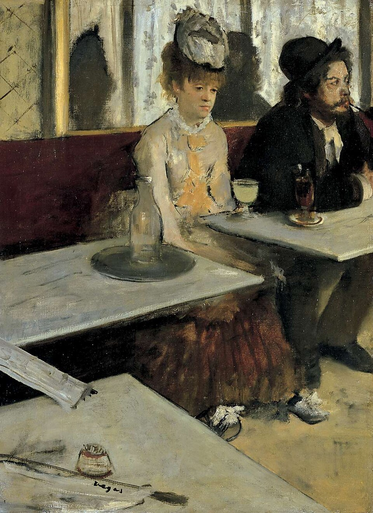

苦艾酒（在咖啡馆里） In a Café (The Absinthe)
德加 · 1875–1876年 · 巴黎奥赛博物馆
Edgar Degas · 1875–76 · Musée d'Orsay, Paris
图片：Wikimedia Commons，公有领域 / Image: Wikimedia Commons, public domain

发现 · Discover
并肩，却各自沉默 Side by side, each alone
一男一女虽然并肩坐着，却各自封闭在沉默里，眼神空洞。
Though they sit side by side, the man and woman are each walled in their own silence, their eyes empty.
那杯酒 The glass
女子面前放着一杯浅绿色的苦艾酒。这幅画后来就因为它，被叫作《苦艾酒》。
In front of the woman is a glass of pale green absinthe. It later gave the painting the name by which it is known today.
新雅典咖啡馆 The Nouvelle-Athènes
这是巴黎皮加勒广场的“新雅典”咖啡馆，当时现代艺术家常在这里聚会。
This is the Nouvelle-Athènes café on the Place Pigalle in Paris, a meeting place for modern artists of the time.
朋友当模特 Friends as models
德加请认识的人来扮演画中人物：女子是女演员艾伦·安德烈，男子是画家和版画家马塞兰·德布丹。
Degas asked people he knew to pose: the woman is the actress Ellen Andrée, the man the painter and engraver Marcellin Desboutin.
镜子里的影子 Shadows in the mirror
他们身后的大镜子里，映出了两人模糊的影子。
In the large mirror behind them, their shadowy silhouettes are reflected.
报纸上的签名 A signature on the newspaper
德加把签名“Degas”写在左下角报夹上的一张报纸上。
Degas signed his name on a newspaper on a newspaper holder, lower left.
故事 · The story
ACT I 第一幕 · 城市的画家 A painter of the city
和他的印象派朋友们不同，德加喜欢画城市里的室内：剧院、咖啡馆，这些演出和休闲的地方。
Unlike his Impressionist friends, Degas was at heart a painter of the city, drawn to its interiors: theatres, cafés, places of entertainment and leisure.
1875–1876年 · 巴黎奥赛博物馆 / 1875–76 · Musée d'Orsay, Paris
ACT II 第二幕 · 画室里的咖啡馆 A café in the studio
这幅画是在画室里画的，不是在咖啡馆里。人们常把它和左拉的小说《小酒店》联系在一起；左拉也对德加说过，他在书里不少地方，干脆就是描写了德加的画。
The painting was made in the studio, not in the café. It is often compared to Zola's novel L'Assommoir; Zola himself told Degas that in places he had simply described some of his paintings.
1875–1876年 · 巴黎奥赛博物馆 / 1875–76 · Musée d'Orsay, Paris
ACT III 第三幕 · 一个新名字 A new title
它原来的画名是《在咖啡馆里》，1876年在第二届印象派画展上展出。1893年在伦敦展出时，画名改成了《苦艾酒》。1911年，它进入法国国家收藏。
Its original title was In a Café, and it was shown at the second Impressionist exhibition in 1876. When it was exhibited in London in 1893, the title was changed to L'Absinthe. In 1911 it entered the French national collection.
1875–1876年 · 巴黎奥赛博物馆 / 1875–76 · Musée d'Orsay, Paris
坐在一起，却各自沉默。 Side by side, each alone in silence.
作品档案 · Artwork record
| 画家（生卒年） · Artist (dates) | 埃德加·德加（1834–1917） / Edgar Degas (1834–1917) |
|---|---|
| 画名 · Title | 苦艾酒（在咖啡馆里） / In a Café (The Absinthe) |
| 年份 · Date | 1875–1876年 / 1875–76 |
| 材质 · Medium | 布面油画 / Oil on canvas |
| 尺寸 · Dimensions | 92 × 68.5 cm |
| 收藏地 · Collection | 巴黎奥赛博物馆（1911年伊萨克·德·卡蒙多伯爵遗赠；编号 RF 1984） / Musée d'Orsay, Paris (Bequest of Count Isaac de Camondo, 1911; RF 1984) |
关于画家 · About the artist
埃德加·德加（1834–1917），法国画家，生于巴黎。他参加了印象派画展，以描绘芭蕾舞者著称。
Edgar Degas (1834–1917) was a French painter, born in Paris. He took part in the Impressionist exhibitions and is best known for his paintings of ballet dancers.